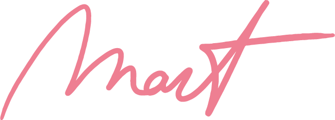
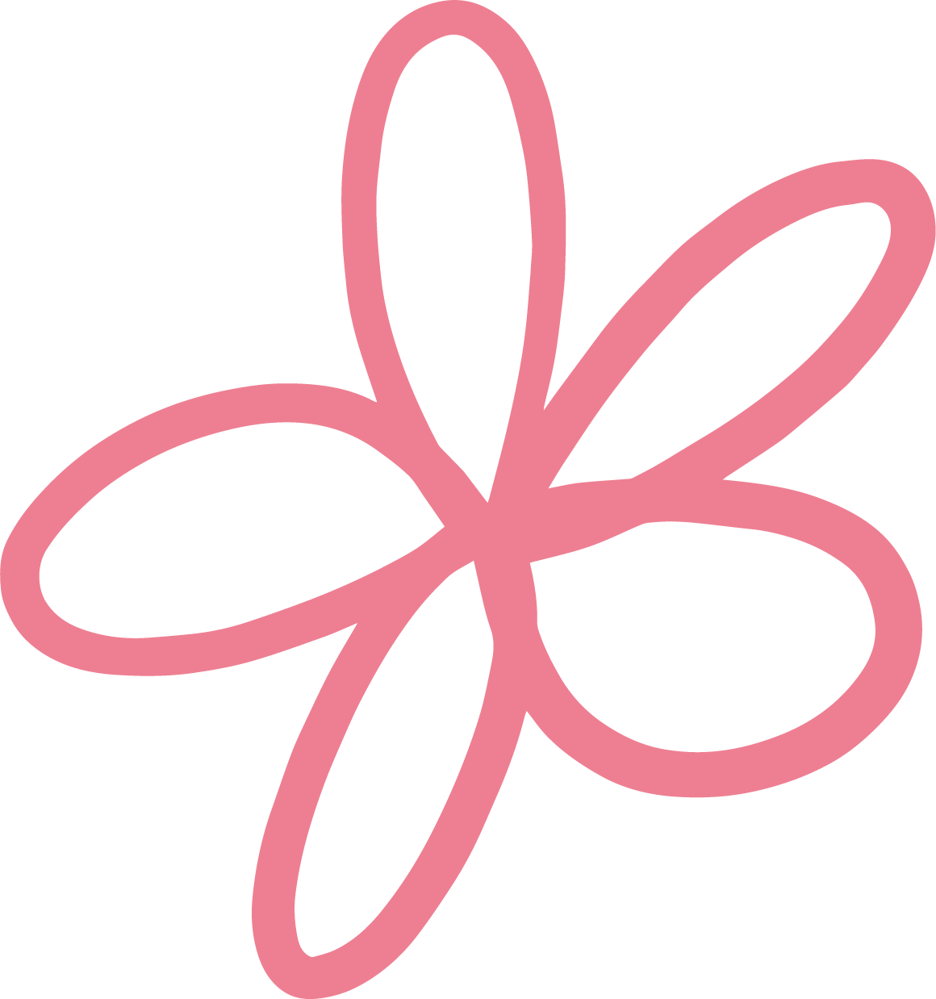
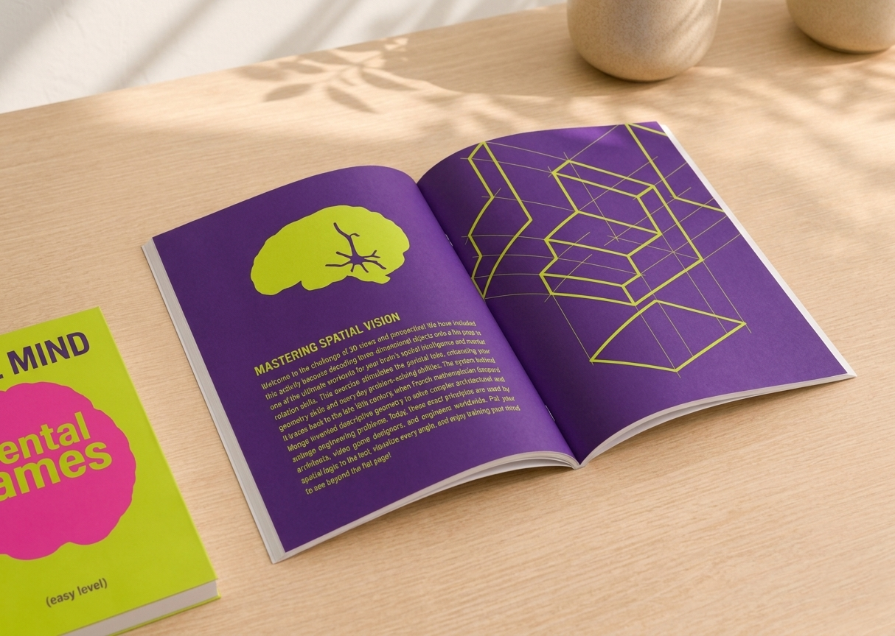
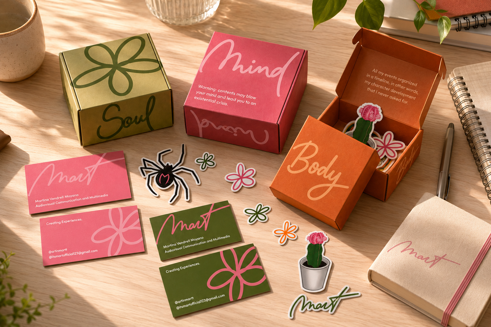
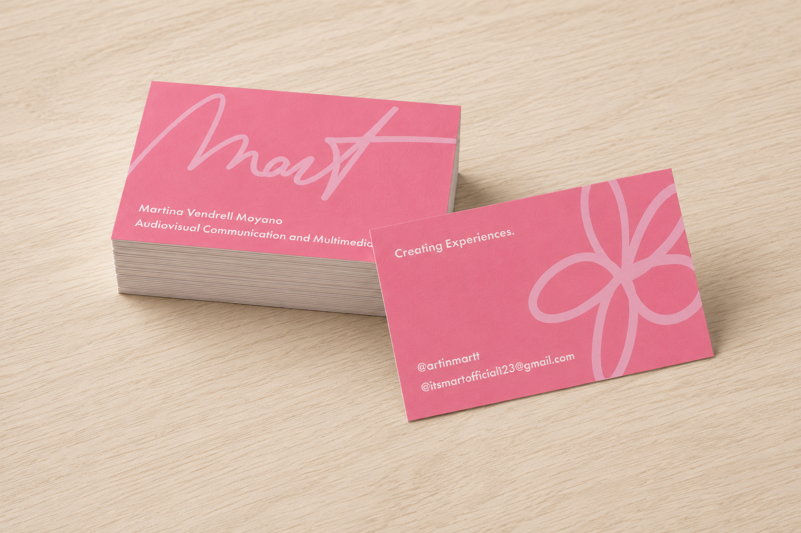
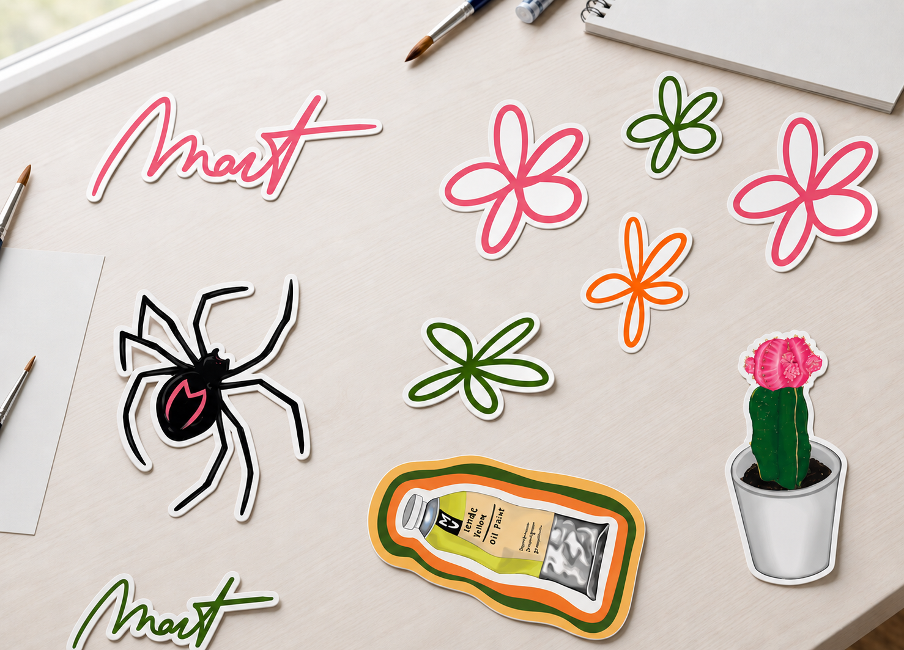
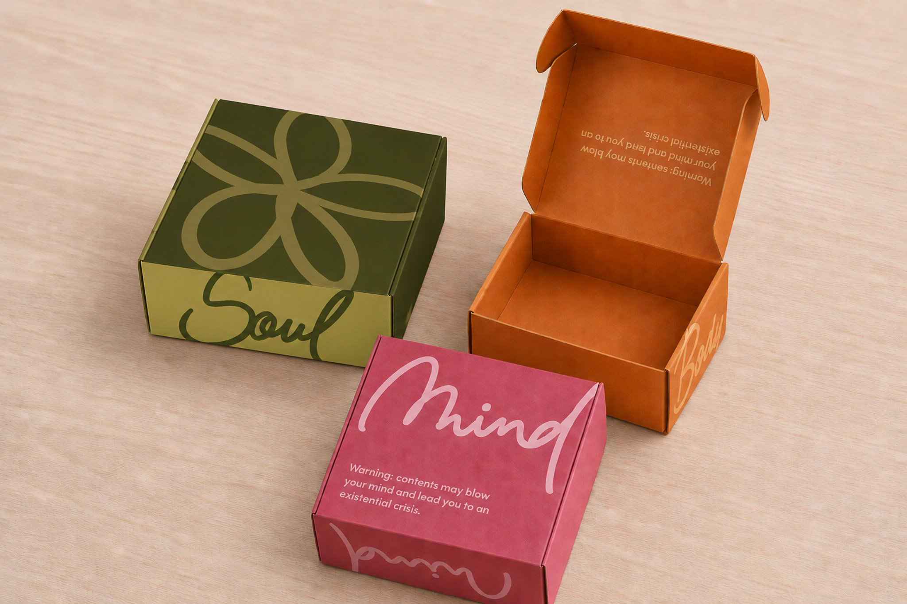

Hola, soc la Martina!
Estudiant de Comunicació Audiovisual i Multimèdia i apassionada de l'art, l'animació i l'storytelling. M'interessa crear projectes amb identitat, emoció i significat, explorant tant l'estètica com el missatge de cada treball.
Benvinguts al meu portfoli!

projectes
animació
Good Morning, Sir és un curt animat que representa una societat opressiva, silenciosa i rígida. A través de l’escena quotidiana d’una aula de primària, el projecte explora com el context polític i social d’una societat es reflecteix en les dinàmiques més quotidianes. Mitjançant la relació entre professor i alumnat, el curt mostra com l’ambient, els valors i les tensions presents fora de l’aula acaben influenciant fins i tot els espais més ordinaris.
El curt d’animació va acompanyat de diferents cartells per promoure’l. L’objectiu dels pòsters és cridar l’atenció del públic per incentivar a veure el curt. Per això es fa ús d’una tipografia gruixuda i impactant, i del color vermell, l’únic color present en el curt degut al seu simbolisme. A més, per relacionar els cartells amb l’estètica de l’animació, s’han usat els fons, les imatges de les finestres de la classe.
.png)
.png)
.png)
.png)
branding
En un món ple de notificacions, scroll infinit i dopamina ràpida, el nostre cervell cada vegada s’adorm més. És per això que Active Mind neix amb la missió de tornar-nos el control. Creiem que l’entrenament mental pot ser vibrant, estètic i, sobretot, transformador.
Active Mind vol promoure el creixement intel·lectual i les habilitats cognitives de forma divertida, fer entendre l’exercici mental com una activitat constant, potenciar la creativitat, i transmetre un missatge optimista i de la importància “d’entrenar” la ment i tenir-la activa.
Per això, la identitat visual pretén expressar aquests valors i comunicar-los de manera clara mitjançant l’ús de colors vius, formes fàcils de reconèixer, i una tipografia clara i entenedora. Generant així uns dissenys vistosos, energètics i originals, a la vegada que fàcils de reconèixer i d’entendre.
.png)
.png)


toolkit
Com a artista, tinc la meva signatura pròpia i alguns símbols amb els que m’intento associar. A més d’uns colors i tipografies. I tot i que m’agrada experimentar i provar diferents estils, per mi és important tenir una base amb la que m’identifico i puc consultar en qualsevol moment. És per això que tenir un toolkit és molt pràctic.
La meva identitat visual consisteix de colors llampants que es complementen i contrasten entre ells, conjuntament d’una tipografia clara i entenedora, i de la meva pròpia lletra per donar més personalitat i identitat.
El meu toolkit complet és una experiència, un viatge dividit en tres etapes; ment, cos i ànima. I per representar cada etapa faig servir caixetes. A cada caixeta hi ha un material editorial i petits elements que acompanyen el recorregut, com enganxines o bosses de te. El meu toolkit és una eina per conèixer-me millor, que a vegades, jo mateixa he d’usar.


